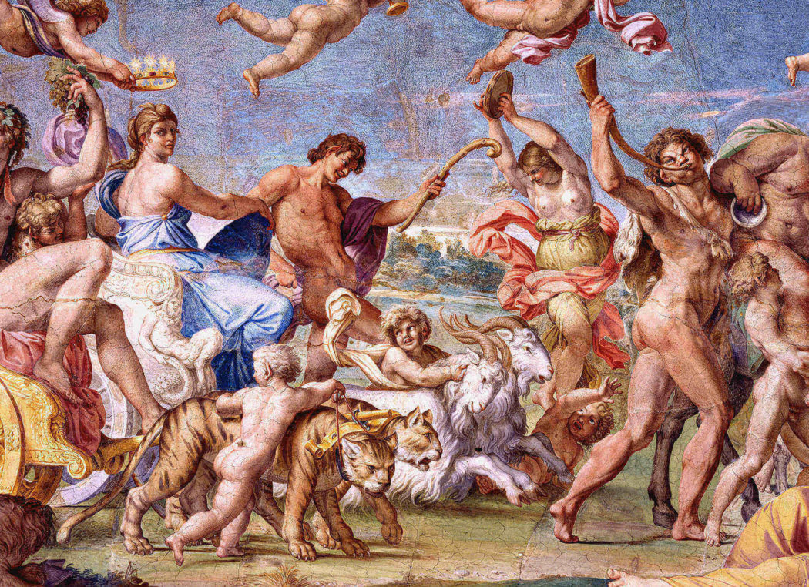

Początki
Słowo "mit" - zresztą jak wiele innych w powszechnym dzisiaj użyciu, zawdzięczamy starożytnym Grekom. Żaden współczesny język nie znalazł dla tego pojęcia innego określenia, tak więc chcąc lepiej zrozumieć, czym jest mitologia, najlepiej chyba zacząć
od przeanalizowania, jakie było pierwotne znaczenie tego słowa.
Mit wywodzi się od pojęcia mowy i w V w. p.n.e. wykorzystywany był do określenia historii, narracji o wydarzeniach. Sygestia, że mit to historia nieprawdopodobna,
opowieść bardziej fikcyjna, niż stwierdzenie faktów, została zarysowana silniej przez Platona, któremu zależało na rozróżnieniu tego, co możemy uznać za prawdę, a czego nie.

Mitologie z różnych części świata
| Europa |
Wierzenia Europy składają się przedewszystkim z mitów słowiańskich, germańskich oraz greckich. |
| Azja |
Najbardziej powrzechne mity azjatyckie pochodzą z Japoni, Chin oraz Indii. |
| Ameryka |
Mity Azteków, Majów i Indian. |
| Afryka |
Wierzenia Afryki oraz mitologia Egiptu. |
Powrót do góry